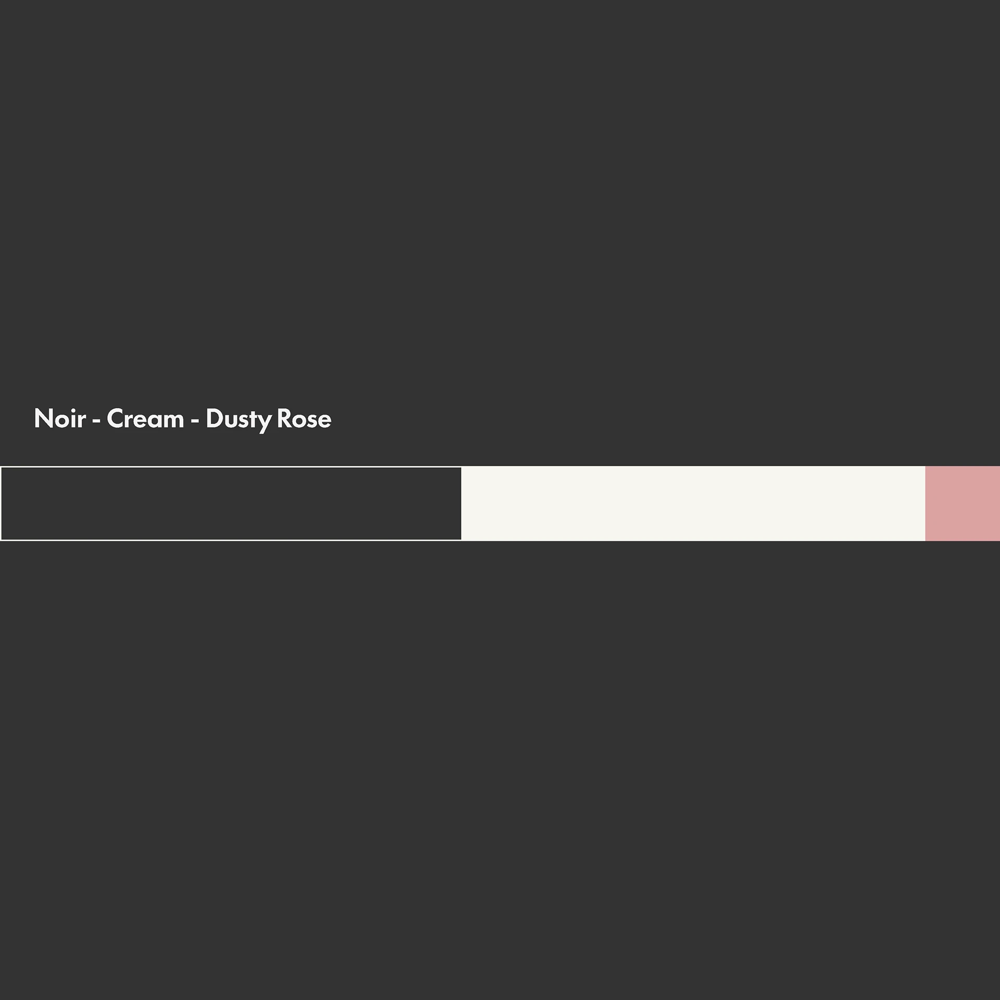
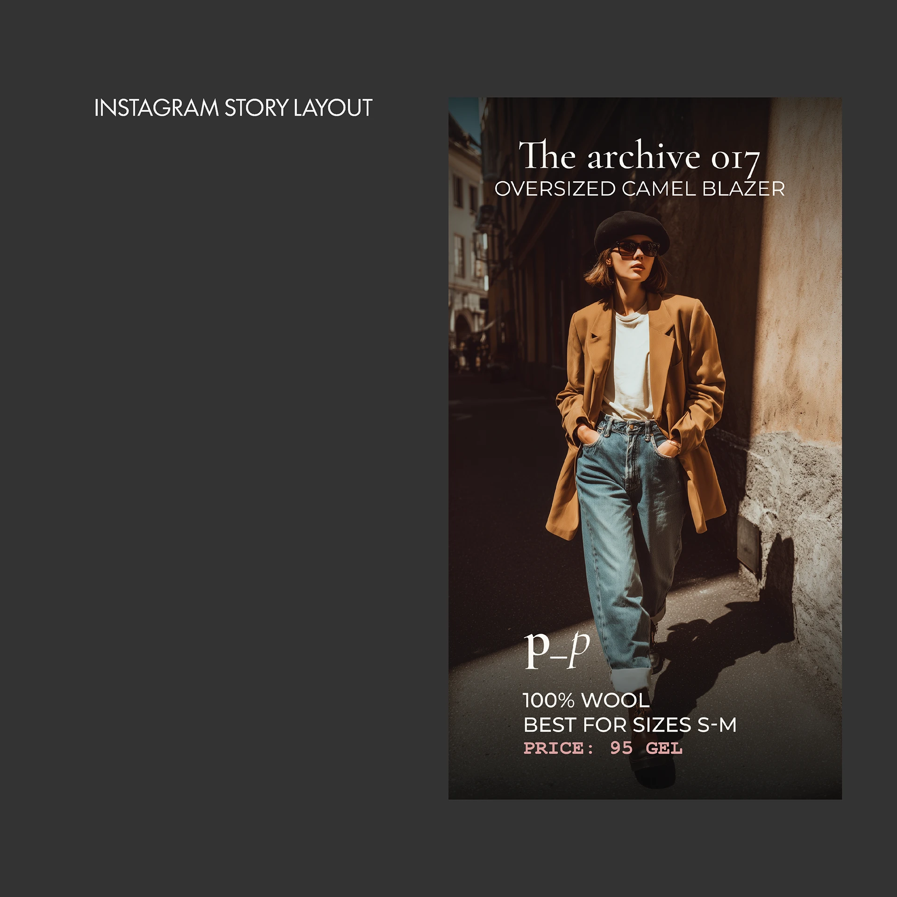
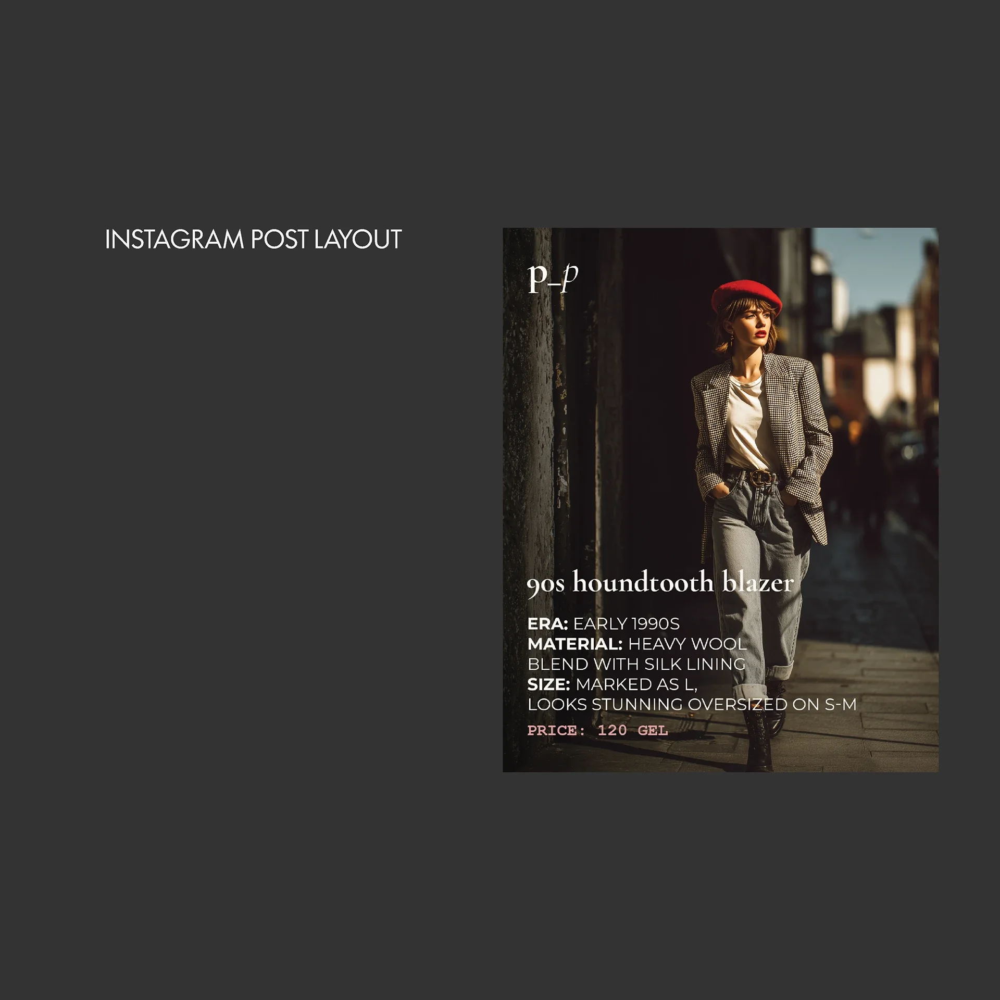
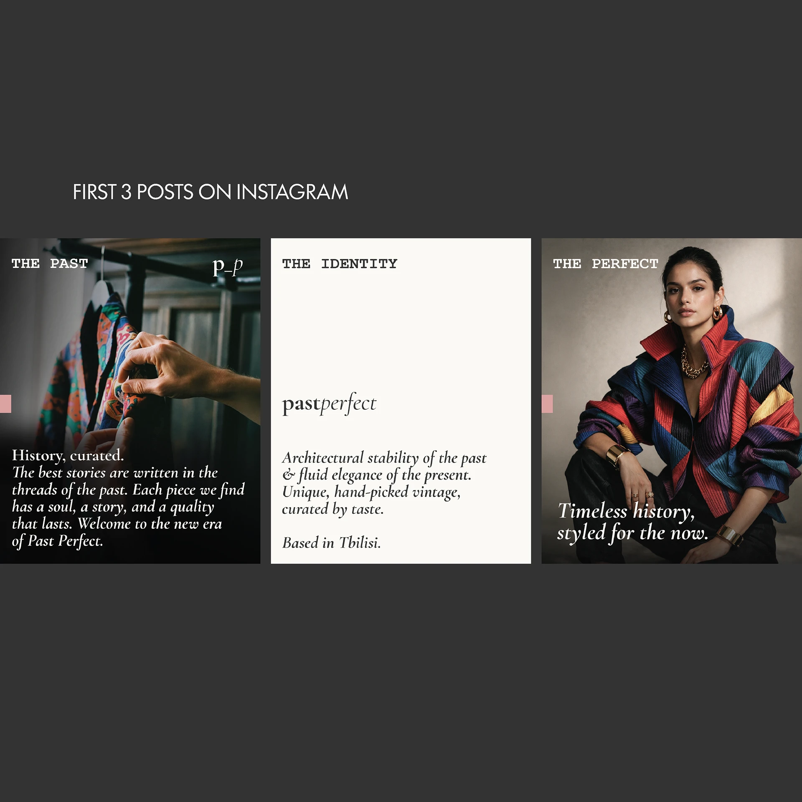
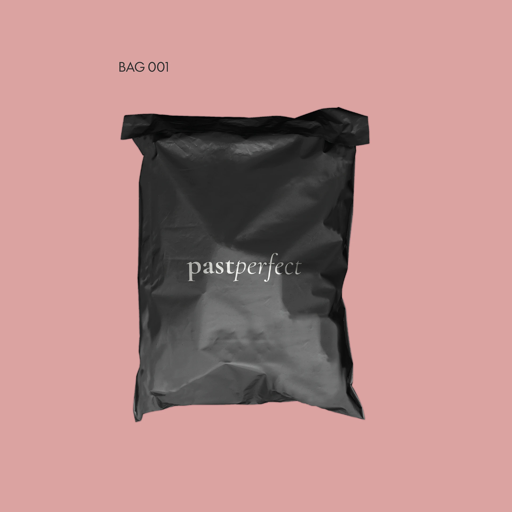
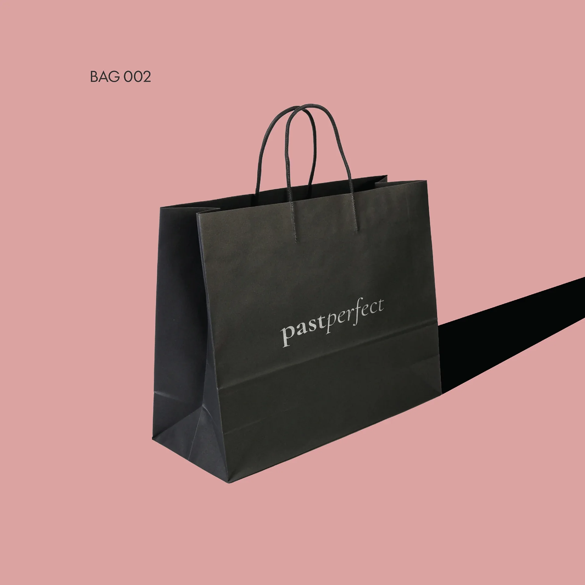

BRANDING: pastperfect
Neo-nostalgia is not memory. It is the precise tremor at the boundary between what persisted and what transformed.
Past Perfect is a vintage fashion Instagram shop built around a single conviction: that curation is itself a creative act. The brief was to build a visual identity that felt as considered as the garments it presents - something with the gravity of an archive and the restraint of a well-edited wardrobe. The mark needed to work natively on Instagram while carrying the weight of something older.
The identity is built on intentional tension between permanence and warmth. The typographic system pairs a monumental vertical axis with italic cuts - stillness against motion, the archival against the present. Three tones do all the work: noir for permanence, cream for the warmth of aged material, dusty rose as evidence of time - the blush of something once loved. No decorative elements. Every decision load-bearing.
A complete identity system: primary wordmark, monogram, color palette, and typographic hierarchy. Built for Instagram-first use but resolved at every scale from favicon to large-format print. The system is intentionally restrictive - three colors, two typeface weights, one compositional logic - because Past Perfect's entire proposition is that constraint is a form of quality.
Temporal Fracture
Form exists in dialogue between stillness and motion. The vertical axis holds - resolute, architectural, monumental - while the italic cuts through: fluid, present, unresolved.
Colour System
Noir grounds the work in permanence. Cream radiates the warmth of aged paper and morning light on stone. Dusty Rose arrives not as ornament but as evidence - the blush of something once loved, the tint of time made visible.
The Mark
The p_p monogram operates as a gatekeeping gesture rather than a logo in the conventional sense - referencing the pencil mark on a manuscript proof, the stamp on a library card.
Sound
Nujabes, J Dilla, DJ Shadow, Shlohmo, Powfu — the lofi register the identity was designed to move through.






